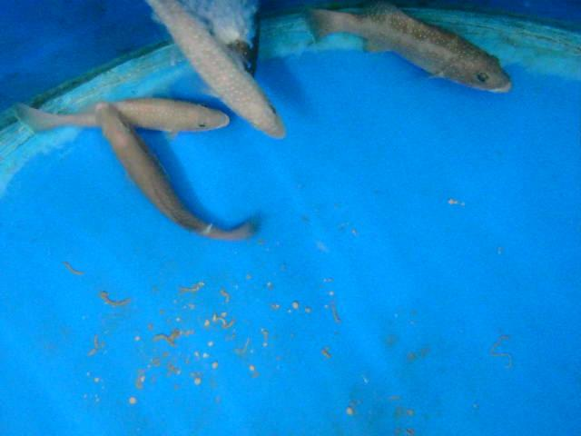
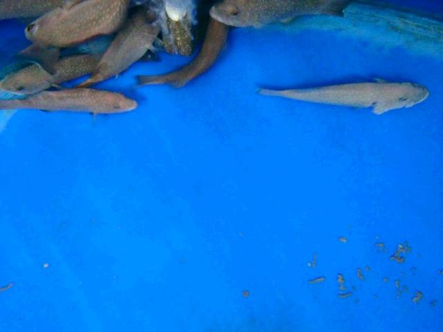
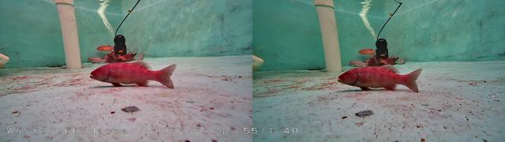
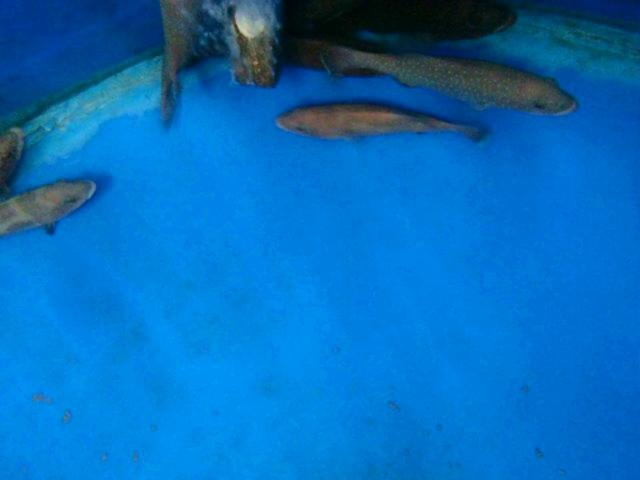
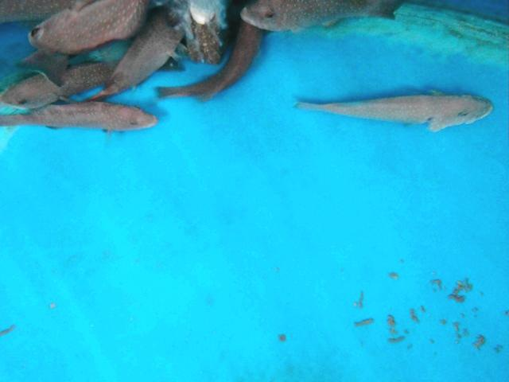
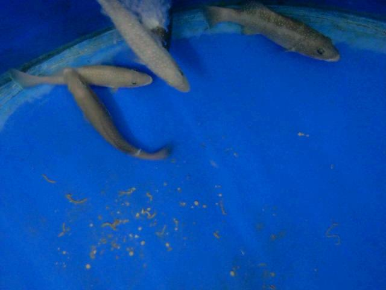
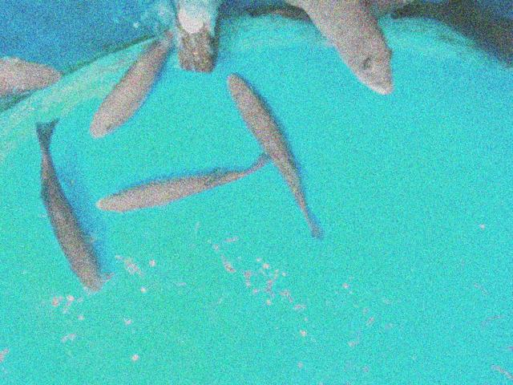
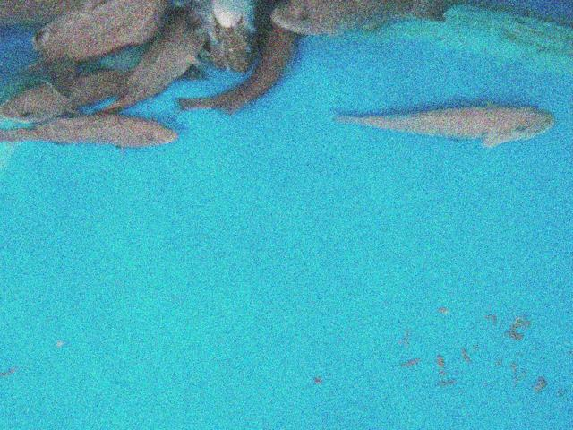

Resultados /
base_yoloworld_bezierfusion_muestra
Precisión 50,9 % 28 aciertos, 27 falsos
Recall 48,3 % 30 no detectados
F1 49,6 % IoU ≥ 0.5
IoU medio 0,89 de los aciertos
Error de puntos – de la diagonal de la caja
Tiempo 38 ms por imagen
Modelo yolov8s-worldv2.pt [fish] · confianza mínima 0.25 · imagen 1024 px · muestra del dataset
Dónde acierta y dónde se equivoca
3 de 24 imágenes sin ningún error.
En cada imagen: ✓ acierto (IoU ≥ 0.5), FP detección sin etiqueta, FN etiqueta sin detección.
Clic en una imagen para ver cajas, probabilidades y el mapa de atención.

punto 1 punto 2 punto 3 punto 4 punto 1 punto 2 punto 3 punto 4
0164.jpg
0 ✓ · 4 FP · 2 FN
punto 1 punto 2 punto 3 punto 4 punto 1 punto 2 punto 3 punto 4 punto 1 punto 2 punto 3 punto 4 punto 1 punto 2 punto 3 punto 4 punto 1 punto 2 punto 3 punto 4 punto 1 punto 2 punto 3 punto 4
607.jpg
2 ✓ · 2 FP · 4 FN

punto 1 punto 2 punto 3 punto 4 punto 1 punto 2 punto 3 punto 4
0136.jpg
1 ✓ · 3 FP · 1 FN

punto 1 punto 2 punto 3 punto 4 punto 1 punto 2 punto 3 punto 4
1564.jpg
1 ✓ · 3 FP · 1 FN
punto 1 punto 2 punto 3 punto 4 punto 1 punto 2 punto 3 punto 4 punto 1 punto 2 punto 3 punto 4 punto 1 punto 2 punto 3 punto 4
294.jpg
0 ✓ · 0 FP · 4 FN

punto 1 punto 2 punto 3 punto 4 punto 1 punto 2 punto 3 punto 4
013.jpg
1 ✓ · 2 FP · 1 FN
punto 1 punto 2 punto 3 punto 4 punto 1 punto 2 punto 3 punto 4
0135.jpg
1 ✓ · 2 FP · 1 FN

punto 1 punto 2 punto 3 punto 4 punto 1 punto 2 punto 3 punto 4
0151.jpg
2 ✓ · 3 FP · 0 FN

punto 1 punto 2 punto 3 punto 4 punto 1 punto 2 punto 3 punto 4
0189.jpg
2 ✓ · 3 FP · 0 FN

punto 1 punto 2 punto 3 punto 4 punto 1 punto 2 punto 3 punto 4 punto 1 punto 2 punto 3 punto 4
0251.jpg
0 ✓ · 0 FP · 3 FN
punto 1 punto 2 punto 3 punto 4 punto 1 punto 2 punto 3 punto 4
1470.jpg
0 ✓ · 1 FP · 2 FN

punto 1 punto 2 punto 3 punto 4 punto 1 punto 2 punto 3 punto 4
0145.jpg
0 ✓ · 0 FP · 2 FN